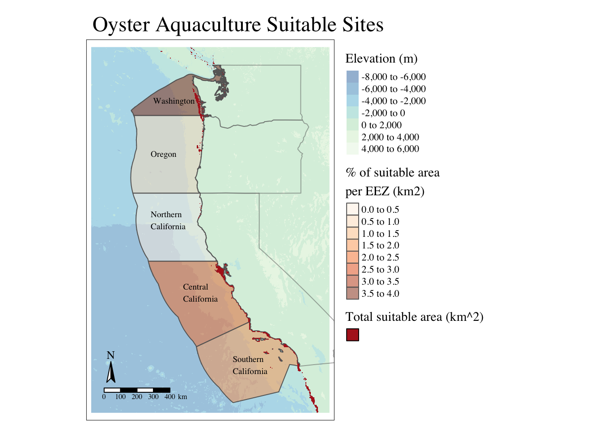
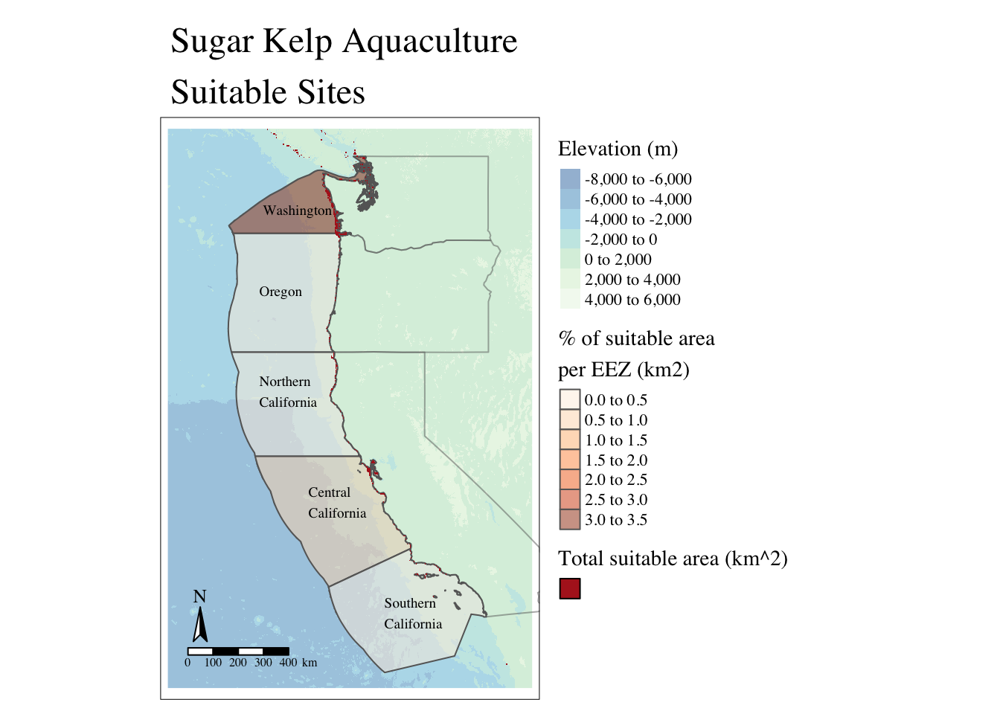

Show the code
library(tidyverse)
library(dplyr)
library(here)
library(sf)
library(terra)
library(stars)
library(tmap)
library(raster)
library(spData)
library(kableExtra)
library(testthat)Prioritizing potential aquaculture
Aquaculture is a quickly growing field as a means to supply more sustainable protein options without the land use. This assignment aims to determine which Exclusive Economic Zones (EEZ) on the West Coast are best suited as marine aquaculture sites for oysters and sugar kelp (Saccharina latissima). Sites are choosen based on a range of suitable sea surface temperatures and depth values for the particular species.
library(tidyverse)
library(dplyr)
library(here)
library(sf)
library(terra)
library(stars)
library(tmap)
library(raster)
library(spData)
library(kableExtra)
library(testthat)Sea surface temperature data from 2008 to 2012 generated from NOAA’s 5km Daily Satellite Sea Surface Temperature Anomaly v3.1 [1]
Bathymetry data comes from General Bathymetric Charts of the Oceans (GEBCO). [2]
The designation of Exclusive Economic Zones off the West Coast comes from Marineregions.org, which outlines the boundaries of marine biogeographic areas. [3] The names of the regions are: Washington, Oregon, Northern California, Central California, and Southern California.
Oysters:
Sugar Kelp [4]:
# ---- Raster stack of sea surface temperatures from 2008 to 2012
# Set directory
sst_path <- here::here('data')
# Create list of all SST .tif files
sst_files <- list.files(sst_path,
pattern = glob2rx("*average_annual_sst_*.tif$"),
full.names = TRUE)
# Create a raster stack
sst <- rast(sst_files)
# ---- Bathymetry data
depth <- terra::rast(here::here('data', 'depth.tif'))
# ---- EEZ
eez <- read_sf(here::here('data', 'wc_regions_clean.shp'))
# ---- West coast states
# load US states
us_states <- spData::us_states
# filter to ca, or, wa
west_coast_states <- us_states %>%
filter(NAME %in% c("California", "Oregon", "Washington"))In order to find which area is suitable for oyster production in terms of sea surface temperature and depth, the data needs to be processed. The following code matches the coordinate reference systems (CRS) of all the spatial data, finds the mean sea surface over the time period, and converts the temperature from Kelvin to Celsius. Then, the resolution and extents of the raster data are alligned so that the depth and temperature data can be combined.
# ---- Coordinate Reference Systems
# Reproject CRS to all match sst
depth <- terra::project(depth, crs(sst))
eez <- st_transform(eez, crs(sst))
west_coast_states <- st_transform(west_coast_states, crs(sst))
#---- Finding mean sea surface temperatures from 2008-2012
# Mean of raster stack
sst_mean <- mean(sst)
# ---- Convert SST from Kelvin to Celsius
# Convert to Celsius by subtracting 273.15
sst_c <- sst_mean - 273.15
# Rename layer name
names(sst_c) <- "temp_c"# ---- Crop depth raster to match the extent of SST raster
# View it before crop
map1 <- tm_shape(depth) +
tm_raster() +
tm_layout(title = "Pre-crop")
# Crop depth extent to that of sst
depth_range <- terra::crop(depth, sst_c)
# View what happened
map2 <- tm_shape(depth_range) +
tm_raster() +
tm_layout(title = "Post-crop")
#tmap_arrange(map1, map2, nrow = 1)
# ---- Resolution
# Check if resolution of depth and sst match
res(depth_range) == res(sst_c)
# Change resolution of depth to match sst using nearest neighbor approach
depth_rs <- terra::resample(depth_range, y = sst_c, method = "near")Now let’s confirm the dimensions of data match before merging them
# Test to check rasters are compatible for stacking
test_that("Resolution, extent, and CRS are the same", {
# Check resolution
expect_equal(res(depth_rs), res(sst_c), label = "Resolution does not match")
# Check extent
expect_equal(ext(depth_rs), ext(sst_c), label = "Extent does not match")
# Check CRS
expect_equal(st_crs(depth_rs), st_crs(sst_c), label = "CRS does not match")
})Test passed 🥳In order to find cells within the raster that are suitable for oyster conditions, I will reclassify the raster as the following:
Set the following values to 1
Any other value set to 0
# ---- Reclassification
# Create reclasification matrix for depth
rcl_depth <- matrix(c(-Inf, -70, 0, # values -Inf to -70 = 0
-70, 0, 1, # values -70 to 0 = 1
0, Inf, 0), # values 0 to Inf = 0
ncol = 3, byrow = TRUE)
# Create reclasification matrix for temp
rcl_sst <- matrix(c(-Inf,11, 0,# values from -Inf to 11 = 0
11, 30, 1, # values 11 to 30 = 1
30, Inf, 0), # values 30 to Inf = 0
ncol = 3, byrow = TRUE)
# Reclassify the raster for oyster specifications
depth_oyster <- terra::classify(depth_rs, rcl = rcl_depth)
sst_oyster <- terra::classify(sst_c, rcl = rcl_sst)
# ---- Raster stack
# Create raster stack
oyster_stack <- c(depth_oyster, sst_oyster)
# Apply multiplication
suitable_oyster <- terra::lapp(oyster_stack, fun = function(depth, sst) depth * sst)
# Turn 0 values into NA
suitable_oyster[suitable_oyster == 0] <- NAWith the suitable areas for oyster aquaculture identified, the next step is to determine how much of these areas fall within each Exclusive Economic Zone (EEZ) along the west coast. Building on the previous analyses, I will create a map and a table to visualize and summarize these findings.
# ---- Calculate % of suitable area per zone
# Rasterize the eez dataframe using the 'rgn' column
eez_rast <- terra::rasterize(eez, suitable_oyster, field = "rgn")
# Create dataframe that displays suitable area of each zone
suitable_area <- terra::expanse(suitable_oyster, unit = "km", zones = eez_rast)
# Rename columns
suitable_area <- suitable_area %>%
rename("suitable_area_km2" = "area",
"rgn" = "zone")
# Calculate percent of each zone that contains suitable area for oyster aquaculture
eez_oyster <- eez %>%
left_join(suitable_area, by= "rgn") %>%
mutate(zone_pct = suitable_area_km2 / area_km2 * 100)
# ---- Base map
# Create bounding box of extents
bbox_depth <- as.matrix(terra::ext(depth_range))
basemap <- tm_shape(depth_range) + # depth raster to show borders
tm_raster(palette = "-GnBu", midpoint = NA, alpha = 0.45, legend.show = TRUE, title = "Elevation (m)") +
tm_shape(west_coast_states, bbox = bbox_depth) + # state outlines
tm_borders(alpha = 0.5) +
# labels for eez zones
tm_credits("Washington", position = c(0.26, 0.82), size = 0.6) +
tm_credits("Oregon", position = c(0.25, 0.68), size = 0.6) +
tm_credits("Northern\nCalifornia", position = c(0.25, 0.49), size = 0.6) +
tm_credits("Central\nCalifornia", position = c(0.38, 0.3), size = 0.6) +
tm_credits("Southern\nCalifornia", position = c(0.58, 0.11), size = 0.6) +
tm_scale_bar(position = c(0.06, 0.04)) + # scale bar and compass
tm_compass(position = c(0.03, 0.1), size = 1.5)
# ---- Map for oyster aquaculture
basemap + tm_shape(eez_oyster) + # eez zones
tm_polygons(col = "zone_pct",
palette = "Oranges",
alpha = 0.5,
title = "% of suitable area \nper EEZ (km2)") +
tm_shape(suitable_oyster) + # suitable oyster area
tm_raster(palette = "firebrick", legend.show = FALSE) +
tm_add_legend(type = "fill",
title = "Total suitable area (km^2)",
col = "firebrick",
labels = " ") +
tm_layout(legend.outside = TRUE,
fontfamily = "serif",
main.title = "Oyster Aquaculture Suitable Sites")
# ---- Table
# Filter data for table
eez_table <- eez_oyster %>%
st_drop_geometry() %>%
dplyr::select(rgn, area_km2, suitable_area_km2, zone_pct)
kable(eez_table,
col.names = c("EEZ Region",
"EEZ total area (km^2)",
"Suitable aquaculture area (km^2)",
"% of suitable area per zone"),
caption = "Percentage of suitable oyster aquaculture sites per EEZ",
digits = 2) %>%
kable_styling(bootstrap_options = "striped", full_width = FALSE, position = "center", html_font='times new roman')| EEZ Region | EEZ total area (km^2) | Suitable aquaculture area (km^2) | % of suitable area per zone |
|---|---|---|---|
| Oregon | 179994.06 | 1074.27 | 0.60 |
| Northern California | 164378.81 | 178.03 | 0.11 |
| Central California | 202738.33 | 4069.88 | 2.01 |
| Southern California | 206860.78 | 3757.28 | 1.82 |
| Washington | 66898.31 | 2378.31 | 3.56 |
The map and the table above show the total area per EEZ. The EEZ with the greatest suitable area is Washington with 3.56 % while the EEZ with the lowest suitable area is Northern California with only 0.11%. All of the potential sites are very along the coast where the water depth is equal to or higher then 70 meters.
The following code takes the analysis above and turns it into a function that allows for other species’s depth and temperature specifications to find suitable aquaculture sites. Additionally, the function produces a map and a table to better visualize the results.
# ----- Aquaculture function
aqua_fun <- function(depth_low, depth_high, temp_low, temp_high, species_name){
# reclassification matrices
rcl_depth <- matrix(c(-Inf, depth_low, 0,
depth_low, depth_high, 1, # suitable range
depth_low, Inf, 0),
ncol = 3, byrow = TRUE)
rcl_sst <- matrix(c(-Inf,temp_low, 0,
temp_low, temp_high, 1, # suitable range
temp_high, Inf, 0),
ncol = 3, byrow = TRUE)
# reclassify depth and temp rasters
aqua_depth <- terra::classify(depth_rs, rcl = rcl_depth)
aqua_sst <- terra::classify(sst_c, rcl = rcl_sst)
# raster stack
aqua_stack <- c(aqua_depth, aqua_sst)
# suitable locations
suitable_aqua <- terra::lapp(aqua_stack, fun = function(depth, sst) depth * sst)
# Turn 0 values into NA
suitable_aqua[suitable_aqua == 0] <- NA
# Rasterize the eez dataframe using the 'rgn' column
eez_rast <- terra::rasterize(eez, suitable_aqua, field = "rgn")
# Create dataframe that displays suitable area of each zone
suitable_area <- terra::expanse(suitable_aqua, unit = "km", zones = eez_rast)
# Rename columns
suitable_area <- suitable_area %>%
rename("suitable_area_km2" = "area", "rgn" = "zone")
# Calculate percent of each zone that contains suitable area for oyster aquaculture
eez_aqua <- eez %>%
left_join(suitable_area, by= "rgn") %>%
mutate(zone_pct = suitable_area_km2 / area_km2 * 100)
# Map for aquaculture sites of species
aqua_map <- basemap + tm_shape(eez_aqua) + # eez zones
tm_polygons(col = "zone_pct",
palette = "Oranges",
alpha = 0.5,
title = "% of suitable area \nper EEZ (km2)") +
tm_shape(suitable_aqua) + # suitable area
tm_raster(palette = "firebrick", legend.show = FALSE) +
tm_add_legend(type = "fill",
title = "Total suitable area (km^2)",
col = "firebrick",
labels = " ") +
tm_layout(legend.outside = TRUE,
fontfamily = "serif",
main.title = paste(species_name,"Aquaculture \nSuitable Sites"))
# table
eez_table <- eez_aqua %>% # Filter data for table
st_drop_geometry() %>%
dplyr::select(rgn, area_km2, suitable_area_km2, zone_pct)
eez_table_html <- kable(eez_table,
col.names = c("EEZ Region",
"EEZ total area (km^2)",
"Suitable aquaculture area (km^2)",
"% of suitable area per zone"),
caption = paste("Percentage of suitable ", species_name, " aquaculture sites per EEZ"),
digits = 2) %>%
kable_styling(bootstrap_options = "striped", full_width = FALSE, position = "center", html_font='times new roman')
print(aqua_map)
eez_table_html
}Now, I will use the function to plug in the depth and temperature specifications for sugar kelp
aqua_fun(depth_low = -30, depth_high = 0, temp_low = 10, temp_high = 15, species_name = "Sugar Kelp")
| EEZ Region | EEZ total area (km^2) | Suitable aquaculture area (km^2) | % of suitable area per zone |
|---|---|---|---|
| Oregon | 179994.06 | 686.14 | 0.38 |
| Northern California | 164378.81 | 715.18 | 0.44 |
| Central California | 202738.33 | 1161.82 | 0.57 |
| Southern California | 206860.78 | 407.91 | 0.20 |
| Washington | 66898.31 | 2213.65 | 3.31 |
Similarly to the oyster results, the EEZ with the most suitable sites for sugar kelp is Washington with 3.31% while the EEZ with the least amount of suitable sites is Southern California with 0.20%. Since suagr kelp grows in a very narrow temperature range, it makes sense that the majority of the sites are found up in Washington where the water is typically colder than the California waters.
NOAA Coral Reef Watch. 2008-2012, updated daily. NOAA Coral Reef Watch Version 3.1 Daily 5km Satellite Regional Virtual Station Time Series Data for Southeast Florida, Mar. 12, 2013-Mar. 11, 2014. College Park, Maryland, USA: NOAA Coral Reef Watch. Data set accessed 2024-11-12 at https://coralreefwatch.noaa.gov/product/vs/data.php.
GEBCO Compilation Group (2024) GEBCO 2024 Grid (doi:10.5285/1c44ce99-0a0d-5f4f-e063-7086abc0ea0f)
Flanders Marine Institute (2024): MarineRegions.org. Available online at www.marineregions.org. Consulted on 2024-11-13.
White, N. & Marshall, C.E. 2007. Saccharina latissima Sugar kelp. In Tyler-Walters H. Marine Life Information Network: Biology and Sensitivity Key Information Reviews, [on-line]. Plymouth: Marine Biological Association of the United Kingdom. [cited 12-11-2024]. Available from: https://www.marlin.ac.uk/species/detail/1375